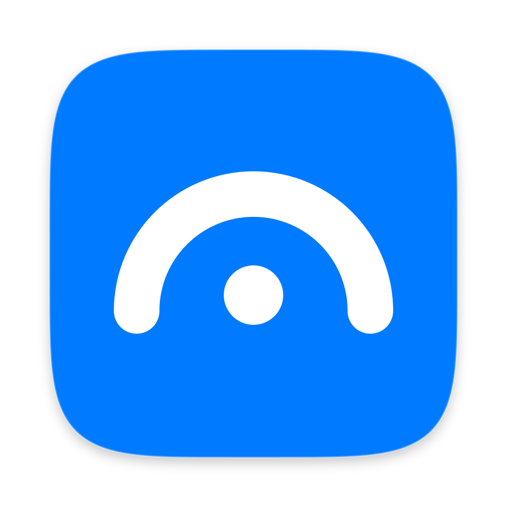

Fermata
Um editor de partituras gratuito para Mac. Paletas flutuantes, um atalho para cada comando e notas que aparecem na pauta enquanto você toca o teclado MIDI.
Baixar para Mac

Um editor de partituras gratuito para Mac. Paletas flutuantes, um atalho para cada comando e notas que aparecem na pauta enquanto você toca o teclado MIDI.
Baixar para Mac
A página no centro, paletas em volta e atalhos para tudo. Quem vem dos editores antigos se sente em casa.
Ligue o teclado MIDI e grave em tempo real, ou escreva nota a nota no teclado do computador.
Abre arquivos .enc (compatível com arquivos do Encore) e MIDI. Exporta MIDI e MusicXML.
Segue a aparência do macOS. A partitura continua sempre num papel branco.
O Fermata é gratuito e ainda não tem a "notarização" paga da Apple. Por isso, na primeira vez, o macOS pede que você confirme que quer abrir o app. É uma confirmação só, feita uma vez.
Clique em Baixar para Mac no alto da página. O arquivo Fermata-Installer.dmg vai para a pasta Downloads.
Abra o .dmg com dois cliques. Na janela que aparece, arraste o ícone do Fermata para a pasta Applications (Aplicativos).
Abra a pasta Aplicativos e dê dois cliques no Fermata. O macOS vai mostrar um aviso dizendo que não pode verificar o app, ou que ele "não foi aberto".
Clique em OK (ou Concluído). Não clique em "Mover para o Lixo".
O botão fica disponível por cerca de uma hora depois da tentativa do passo 3. Se ele não aparecer, repita o passo 3.
Na janela de confirmação, clique de novo em Abrir Mesmo Assim e digite a senha do Mac (ou use o Touch ID). Pronto: daqui em diante o Fermata abre normalmente, com dois cliques.
Se preferir, depois do passo 2 abra o Terminal e rode o comando abaixo. Ele tira a marca de "baixado da internet" só do Fermata:
xattr -dr com.apple.quarantine /Applications/Fermata.appA Apple só deixa de avisar sobre apps que passaram pela notarização dela, que exige uma conta paga de desenvolvedor. O Fermata é um projeto gratuito e ainda não tem essa conta. O código-fonte é aberto e pode ser conferido no GitHub. Baixe sempre por esta página ou pela página de versões do projeto.
Baixe o instalador novo e arraste o Fermata para Aplicativos de novo, escolhendo Substituir. Talvez o macOS peça a confirmação dos passos 3 a 5 mais uma vez.